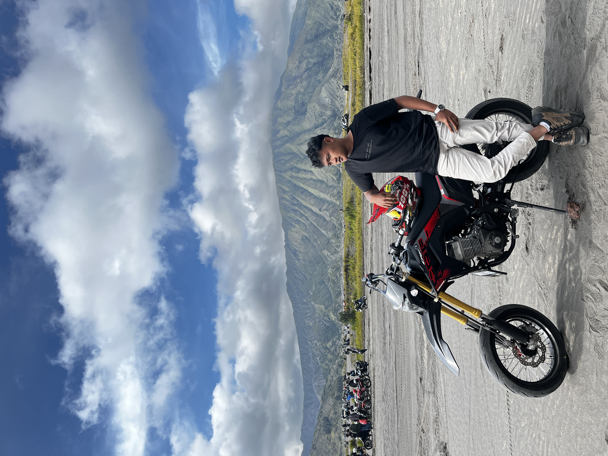

Halo, saya [Iqbal Saputra]
NIM: [2025503040]
Program Studi: Teknologi Informasi
Hubungi Saya
NIM: [2025503040]
Program Studi: Teknologi Informasi
Hubungi SayaSDN Alassumur 1
MTs An-Nur
SMA Ibrahimy 1 Sukorejo
Mahasiswa Program Studi Teknologi Informasi
Universitas Ibrahimy
Saya tertarik mempelajari pembuatan desain visual menggunakan aplikasi desain grafis.
Saya ingin meningkatkan kemampuan menulis kode dan membuat aplikasi sederhana.
Saya tertarik membuat halaman web dengan HTML dan CSS meskipun saya sedikit tidak paham.